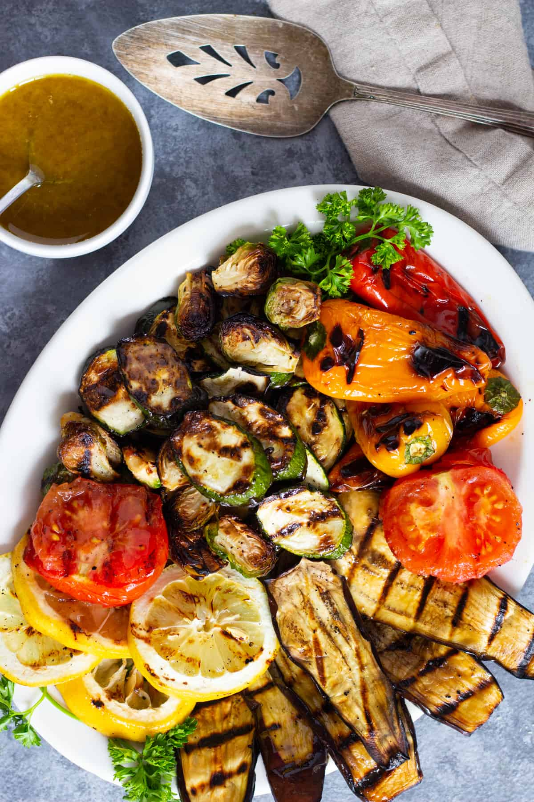

herma

Description
The Mediterranean Grilled Vegetable Platter is a vibrant and wholesome dish that showcases a variety of grilled seasonal vegetables bursting with flavors. This colorful platter features an assortment of vegetables such as zucchini, eggplant, bell peppers, and cherry tomatoes, all beautifully charred on the grill to enhance their natural sweetness. The vegetables are marinated in a blend of olive oil, garlic, lemon juice, and Mediterranean herbs, imparting a delightful tangy and herb-infused taste. Served alongside a creamy yogurt-based tzatziki sauce and warm pita bread, this dish offers a delightful combination of smoky, tangy, and refreshing flavors that transport you to the sunny shores of the Mediterranean. It's a perfect option for vegetarians, vegans, or anyone seeking a healthy and flavorsome meal.
Ingredients
- Chicken Breast or Thighs: 2 boneless, skinless chicken breasts or 4 boneless, skinless chicken thighs, sliced into thin strips.
- Thai Basil Leaves: 1 cup of fresh Thai basil leaves, loosely packed.
- Garlic: 4 cloves of garlic, minced.
- Red Chili Peppers: 2-3 Thai red chili peppers, thinly sliced (adjust the quantity based on your desired level of spiciness).
- Cooking Oil: 2 tablespoons of vegetable oil or any other neutral oil.
- Soy Sauce: 2 tablespoons of soy sauce (you can use low-sodium soy sauce if preferred).
- Oyster Sauce: 1 tablespoon of oyster sauce.
- Fish Sauce: 1 tablespoon of fish sauce.
- Brown Sugar: 1 teaspoon of brown sugar (adjust according to your taste).
- Chicken Broth or Water: 2 tablespoons of chicken broth or water (optional, to adjust the sauce consistency).
Steps
- Heat the oil in a wok or large skillet over medium-high heat.
- Add the minced garlic and sliced red chili peppers to the hot oil. Stir-fry for about 30 seconds until fragrant, being careful not to burn the garlic.
- Add the sliced chicken to the pan and stir-fry for 4-5 minutes until the chicken is cooked through and no longer pink.
- In a small bowl, mix together the soy sauce, oyster sauce, fish sauce, and brown sugar until well combined.
- Pour the sauce mixture into the pan with the cooked chicken and stir well to coat the chicken evenly. Cook for an additional 1-2 minutes to allow the flavors to meld together.
- Remove the pan from the heat and add the fresh Thai basil leaves. Stir gently until the basil wilts slightly.
- Taste the dish and adjust the seasonings according to your preference. If you prefer a saucier consistency, add a splash of chicken broth or water.
- Serve the Spicy Thai Basil Chicken over steamed jasmine rice.
- Optional: Garnish with sliced green onions for added freshness and presentation.
- Enjoy your flavorful and aromatic Spicy Thai Basil Chicken!
Home